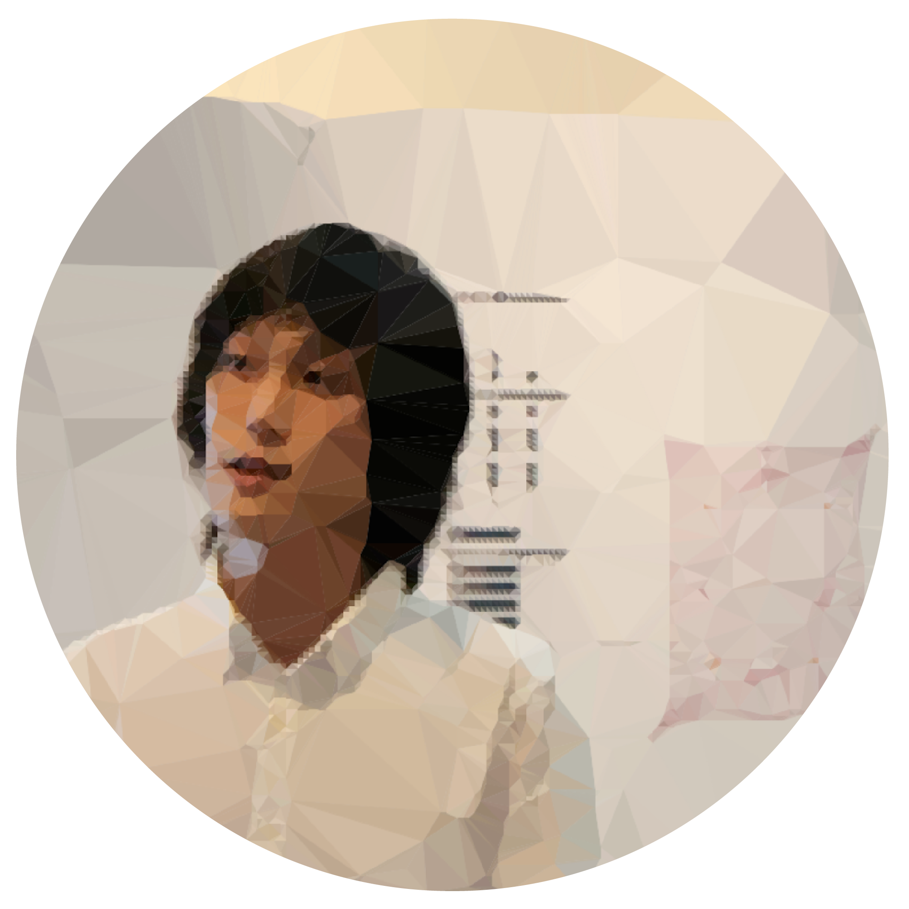

Gene Ting-Chun Kao
Architect / Software Engineer

Projects

Leopard

ICD/ITKE Pavilion 2015/16

Fish

Swarm Bridge

Digital Lamp GUI
Gene Ting-Chun Kao
Gene Ting-Chun Kao is an architect, a designer as well as a prolific programmer. He specialises in advanced geometry, computational design, form finding, and digital fabrication. He is currently doing research & innovation, development, programming and software development in 5D.BIM Department, Technical Head Office, in Züblin Strabag AG. He completed his master thesis in two institutes— Institute of Building Structures and Structural Design (ITKE) and Institute for Computational Design and Construction (ICD) in University of Stuttgart, Germany. By cooperating with architects, computer scientists, and structure engineers, he has developed several programs to integrate interdisciplinary fields. In his perspective, architectural aesthetics is closely related to structure system and geometry logic. In 2013, GENEATCG (www.geneatcg.com) was established, and he shared many open source codes online. He believes that programming and mathematics will lead architectural design into a whole new era.
Leopard
I wrote this short swarm script with GUI interface in Processing about 4 years ago (When I began to code)… Now I figure out lotsof code from this script should be improved! For instance, we can implement KDTree later… Hope this code from the previous version will help people who needs or interested in it. Source code please see article on my website. http://www.geneatcg.com/2016/05/02/swarm-3d-gui-with-a-tail/
Fish
I wrote this short swarm script with GUI interface in Processing about 4 years ago
(When I began to code)… Now I figure out lotsof code from this script should be
improved! For instance, we can implement KDTree later…
Hope this code from the previous version will help people who needs or interested in it.
Source code please see article on my website.
http://www.geneatcg.com/2016/05/02/swarm-3d-gui-with-a-tail/
Rhino.Python Swarm Bridge
Swarm Behavior + Attractor : Agent methods: 1. Align : Move in the same direction as your neighbours. 2. Cohesion : Remain close to your neighbours. 3. Seperation : Avoid collisions with your neighbours. Attractor methods: (Controlling the shape) From starting points move to target points to create bridge. Using swarm simulation in Grasshopper is in this post: Swarm Python GH Component
Fish
After two years..... finally have time to upload my undergraduate architectural
thesis design Processing + Java code to github.com as open source.
Take a look if anyone is interesting, and welcome to download it.
Java environment is Java SE 6.
Go to Github Link
DigitalLampThesisGUI_v0a01
The Digital Lamp of Architecture - A New Church Prototype
Thesis Video
3D Printed Model(Also generated by this java code)
This is GUI software of Project of "The Digital Lamp of Architecture"
Written by Gene Ting-Chun Kao +GENEATCG http://www.geneatcg.com all right
reserve. Code written in 2013/05
Code credit to Jared Counts Curtain Coding Structure in BlueThen.com
The Digital Lamp of Architecture referred to John Ruskin's book
"The Seven Lamps of Architecture, " and make a comparison between its age
and our digital age. Through traveling, description in theory can be highly
discovered within backpacker's own eye. Finally, digital technology was implanted
into church architecture as an example to reflect on Ruskin's theory. One of the
most important element is "Sublime." Besides, scale, structure and ornamentation
was used to interpret and practice in Digital Architecture.
Fish
I was in the computational design team while designing the ICD/ ITKE Research Pavilion 2015-16 and was mainly in charge of developing computational tools.
Here is the demonstration video to show the geometrical implementation. One of the input parameters from the plugin is a mesh surface, and the output parameters are all tree data structure thus some double-layer light weight structure as well as some planar plates can be generated (Planar plate wasn't realized due to the decision making and scheduling during the development). All the geometries are labeled in the right sequence so they can be fabricated directly:
The demo video above shows the workflow from mesh to pavilion geometry by using our customised Grasshopper component, and we can select vertices from the mesh by using Selectable Preview plugin. Finally, the customised component can generate plate and double layer topology seamlessly.
Some part of the code is on my github and the code project was developed together with Julian Wengzinek, Thu Nguyen-Phuoc and Long Nguyen.
The pavilion project video from the design development to the fabrication process can be seen in the video from ICD/ITKE here.Fish
Here is the demonstration video to show the geometrical implementation. One of the input parameters from the plugin is a mesh surface, and the output parameters are all tree data structure thus some double-layer light weight structure as well as some planar plates can be generated (Planar plate wasn't realized due to the decision making and scheduling during the development). All the geometries are labeled in the right sequence so they can be fabricated directly: